<!-- GENERATED by scripts/generate-oath-tabards-page from acore_world_basic (issue 718a); don't edit by hand: re-run the generator. -->
<title>Oath Tabards</title>
<link rel="preconnect" href="https://fonts.googleapis.com">
<link rel="stylesheet" href="https://fonts.googleapis.com/css2?family=Alegreya+SC:wght@500;700&family=Alegreya+Sans:wght@400;500;700&display=swap">
<style>
/* layout: a herald's roll, the two sides' accepted tabards side by side, then the rest as one long roll */
:root {
  --bg: #f3f1ec; --panel: #fbfaf7; --fg: #23211d; --muted: #6b665c; --line: #d8d3c7;
  --alliance: #1f4f9a; --horde: #9a2a1f; --gold: #8a6a1c;
  --q-poor: #6b6b6b; --q-common: #23211d; --q-uncommon: #1e7b12; --q-rare: #0b55a8; --q-epic: #7a2fb0;
  --display: "Alegreya SC", Georgia, serif; --body: "Alegreya Sans", system-ui, sans-serif;
}
@media (prefers-color-scheme: dark) { :root:not([data-theme="light"]) {
  --bg: #17161a; --panel: #1f1e23; --fg: #ece8df; --muted: #a39d90; --line: #36343b;
  --alliance: #7fa6e8; --horde: #e8877b; --gold: #d9b45a;
  --q-poor: #9d9d9d; --q-common: #ece8df; --q-uncommon: #52d14a; --q-rare: #4ea2ff; --q-epic: #c27cf2; color-scheme: dark } }
:root[data-theme="dark"] {
  --bg: #17161a; --panel: #1f1e23; --fg: #ece8df; --muted: #a39d90; --line: #36343b;
  --alliance: #7fa6e8; --horde: #e8877b; --gold: #d9b45a;
  --q-poor: #9d9d9d; --q-common: #ece8df; --q-uncommon: #52d14a; --q-rare: #4ea2ff; --q-epic: #c27cf2; color-scheme: dark }
body { background: var(--bg); color: var(--fg); font: 16px/1.5 var(--body); }
main { margin: 0 auto; padding-inline: 16px; padding-block: 28px 64px; display: grid; gap: 28px; }
h1, h2 { font-family: var(--display); margin: 0; text-wrap: balance; line-height: 1.15; }
h1 { font-size: 2.1rem; } h2 { font-size: 1.35rem; }
p { margin: 0; max-width: 70ch; } .lede { color: var(--muted); }
/* two columns only when each side gets the room its table needs (about 760px: the two worn pictures at 128px wide each, the name and the note); narrower, Alliance stacks above Horde */
.sides { display: grid; grid-template-columns: repeat(auto-fit, minmax(min(100%, 760px), 1fr)); gap: 20px; }
.side-col { background: var(--panel); border: 1px solid var(--line); border-top: 4px solid var(--c); border-radius: 4px; padding: 16px; display: grid; gap: 10px; min-width: 0; }
.side-col.a { --c: var(--alliance); } .side-col.h { --c: var(--horde); }
.side-col h2 { color: var(--c); }
.scroll { overflow-x: auto; }
table { border-collapse: collapse; width: 100%; font-variant-numeric: tabular-nums; }
th, td { text-align: left; padding: 7px 9px; border-bottom: 1px solid var(--line); vertical-align: top; }
th { font: 600 .72rem/1.2 var(--body); letter-spacing: .08em; text-transform: uppercase; color: var(--muted); }
td.num, th.num { text-align: right; width: 4.5em; color: var(--muted); }
td.note { color: var(--muted); font-size: .92rem; }
a { text-decoration: none; font-weight: 600; } a:hover, a:focus-visible { text-decoration: underline; }
a:focus-visible { outline: 2px solid var(--gold); outline-offset: 2px; }
.q-poor { color: var(--q-poor); } .q-common { color: var(--q-common); } .q-uncommon { color: var(--q-uncommon); } .q-rare { color: var(--q-rare); } .q-epic { color: var(--q-epic); }
.side { font-weight: 700; } .s1 { color: var(--horde); } .s2 { color: var(--alliance); } .none { color: var(--muted); }
.rest { display: grid; gap: 10px; }
img.icon { width: 40px; height: 40px; border: 1px solid var(--line); border-radius: 4px; display: block; }
td.worn { white-space: nowrap; }
/* the pictures are 192x240 (4:5); a fixed height with an automatic width and no max-width keeps that shape, where a page-wide "max-width: 100%" on images squeezed them sideways in a narrow cell */
td.worn img { display: inline-block; vertical-align: top; max-width: none; aspect-ratio: 4 / 5; }
td.worn.big img { height: 160px; width: auto; }
td.worn.small img { height: 80px; width: auto; }
.nopic { color: var(--muted); }
.note-box { border-left: 3px solid var(--gold); padding: 8px 12px; background: var(--panel); color: var(--muted); }
</style>
<main>
  <header style="display:grid;gap:8px">
    <h1>Oath Tabards</h1>
    <p class="lede">After its story, a death knight swears to the Horde or the Alliance for good, and must wear a tabard that clearly shows that side's symbol. These are the tabards the oath accepts, then every other tabard in the game.</p>
    <p class="note-box">The pictures are drawn from the game's own files by the custom client: each tabard's bag icon, and a night elf wearing it from the front and from behind. Which tabards show a side's own crest was judged from those pictures and is kept in the generator's list. Each name also links to the tabard on Wowhead. Tell Claude any that belong in the other list.</p>
  </header>
  <section class="sides" aria-label="Eligible tabards">
    <div class="side-col a"><h2>Alliance</h2><div class="scroll"><table><thead><tr><th class="num">Item</th><th>Icon</th><th>Tabard</th><th>Side in data</th><th>Worn (front, back)</th><th>Why</th></tr></thead><tbody>
<tr><td class="num">15198</td><td class="iconcell">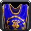</td><td><a class="q-common" href="https://www.wowhead.com/wotlk/item=15198" target="_blank" rel="noopener">Knight's Colors</a></td><td><span class="side s2">Alliance</span></td><td class="worn big">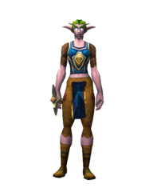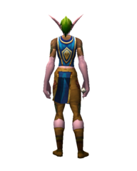</td><td class="note">the Alliance's old honor-rank colours (Knight), the lion on blue</td></tr>
<tr><td class="num">15196</td><td class="iconcell"></td><td><a class="q-common" href="https://www.wowhead.com/wotlk/item=15196" target="_blank" rel="noopener">Private's Tabard</a></td><td><span class="side s2">Alliance</span></td><td class="worn big">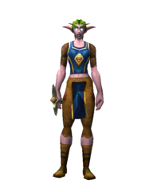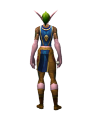</td><td class="note">the Alliance's old honor-rank tabard (Private), the lion on blue</td></tr>
<tr><td class="num">45574</td><td class="iconcell">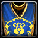</td><td><a class="q-common" href="https://www.wowhead.com/wotlk/item=45574" target="_blank" rel="noopener">Stormwind Tabard</a></td><td><span class="side s2">Alliance</span></td><td class="worn big">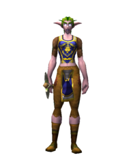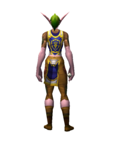</td><td class="note">Stormwind's crest is the Alliance's lion</td></tr>
<tr><td class="num">49052</td><td class="iconcell"></td><td><a class="q-rare" href="https://www.wowhead.com/wotlk/item=49052" target="_blank" rel="noopener">Tabard of Conquest</a></td><td><span class="side s2">Alliance</span></td><td class="worn big">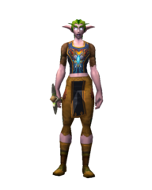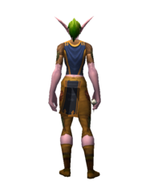</td><td class="note">Tabard of Conquest, the Alliance's version: the side's crest</td></tr>
<tr><td class="num">11364</td><td class="iconcell"></td><td><a class="q-common" href="https://www.wowhead.com/wotlk/item=11364" target="_blank" rel="noopener">Tabard of Stormwind</a></td><td><span class="side s2">Alliance</span></td><td class="worn big">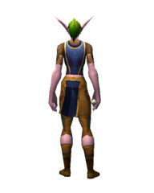</td><td class="note">the lion of Stormwind, the Alliance's crest (an old quest tabard, no side marked in data)</td></tr>
</tbody></table></div></div>
    <div class="side-col h"><h2>Horde</h2><div class="scroll"><table><thead><tr><th class="num">Item</th><th>Icon</th><th>Tabard</th><th>Side in data</th><th>Worn (front, back)</th><th>Why</th></tr></thead><tbody>
<tr><td class="num">45581</td><td class="iconcell">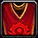</td><td><a class="q-common" href="https://www.wowhead.com/wotlk/item=45581" target="_blank" rel="noopener">Orgrimmar Tabard</a></td><td><span class="side s1">Horde</span></td><td class="worn big">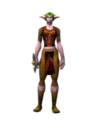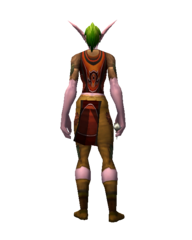</td><td class="note">Orgrimmar's crest is the Horde's emblem</td></tr>
<tr><td class="num">15197</td><td class="iconcell">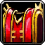</td><td><a class="q-common" href="https://www.wowhead.com/wotlk/item=15197" target="_blank" rel="noopener">Scout's Tabard</a></td><td><span class="side s1">Horde</span></td><td class="worn big">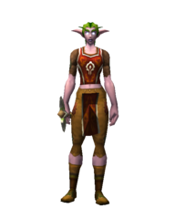</td><td class="note">the Horde's old honor-rank tabard (Scout), the Horde emblem on red</td></tr>
<tr><td class="num">15199</td><td class="iconcell">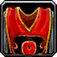</td><td><a class="q-common" href="https://www.wowhead.com/wotlk/item=15199" target="_blank" rel="noopener">Stone Guard's Herald</a></td><td><span class="side s1">Horde</span></td><td class="worn big">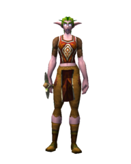</td><td class="note">the Horde's old honor-rank herald (Stone Guard), the Horde emblem on red</td></tr>
<tr><td class="num">49054</td><td class="iconcell"></td><td><a class="q-rare" href="https://www.wowhead.com/wotlk/item=49054" target="_blank" rel="noopener">Tabard of Conquest</a></td><td><span class="side s1">Horde</span></td><td class="worn big">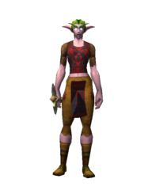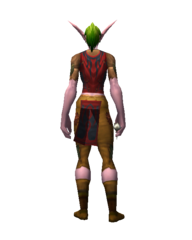</td><td class="note">Tabard of Conquest, the Horde's version: the side's crest</td></tr>
</tbody></table></div></div>
  </section>
  <section class="rest" aria-labelledby="rest-h">
    <h2 id="rest-h">The rest</h2>
    <p class="lede">Not accepted for the oath. Those the game marks as one side's come first: they carry their own emblems, a city's, a faction's or a battleground's, and are worth a look by eye.</p>
    <div class="scroll"><table><thead><tr><th class="num">Item</th><th>Icon</th><th>Tabard</th><th>Side in data</th><th>Worn (front, back)</th><th>Why</th></tr></thead><tbody>
<tr><td class="num">19506</td><td class="iconcell"></td><td><a class="q-common" href="https://www.wowhead.com/wotlk/item=19506" target="_blank" rel="noopener">Silverwing Battle Tabard</a></td><td><span class="side s2">Alliance</span></td><td class="worn small">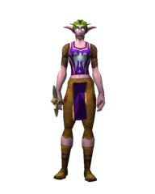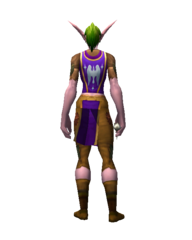</td><td class="note">marked one side's only, but shows its own emblem (a city's, a faction's or a battleground's): check by eye</td></tr>
<tr><td class="num">23999</td><td class="iconcell"></td><td><a class="q-common" href="https://www.wowhead.com/wotlk/item=23999" target="_blank" rel="noopener">Honor Hold Tabard</a></td><td><span class="side s2">Alliance</span></td><td class="worn small">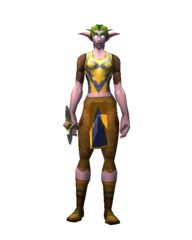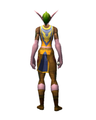</td><td class="note">marked one side's only, but shows its own emblem (a city's, a faction's or a battleground's): check by eye</td></tr>
<tr><td class="num">45578</td><td class="iconcell">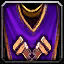</td><td><a class="q-common" href="https://www.wowhead.com/wotlk/item=45578" target="_blank" rel="noopener">Gnomeregan Tabard</a></td><td><span class="side s2">Alliance</span></td><td class="worn small">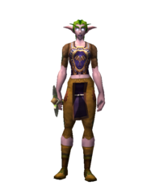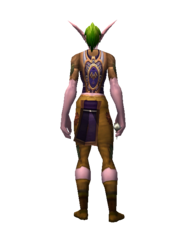</td><td class="note">marked one side's only, but shows its own emblem (a city's, a faction's or a battleground's): check by eye</td></tr>
<tr><td class="num">45580</td><td class="iconcell">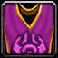</td><td><a class="q-common" href="https://www.wowhead.com/wotlk/item=45580" target="_blank" rel="noopener">Exodar Tabard</a></td><td><span class="side s2">Alliance</span></td><td class="worn small">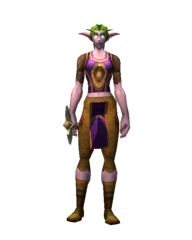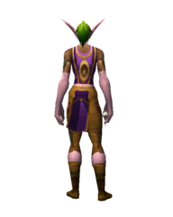</td><td class="note">marked one side's only, but shows its own emblem (a city's, a faction's or a battleground's): check by eye</td></tr>
<tr><td class="num">45577</td><td class="iconcell">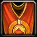</td><td><a class="q-common" href="https://www.wowhead.com/wotlk/item=45577" target="_blank" rel="noopener">Ironforge Tabard</a></td><td><span class="side s2">Alliance</span></td><td class="worn small">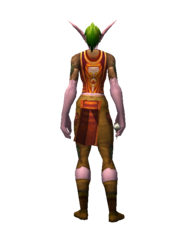</td><td class="note">marked one side's only, but shows its own emblem (a city's, a faction's or a battleground's): check by eye</td></tr>
<tr><td class="num">46817</td><td class="iconcell">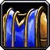</td><td><a class="q-common" href="https://www.wowhead.com/wotlk/item=46817" target="_blank" rel="noopener">Silver Covenant Tabard</a></td><td><span class="side s2">Alliance</span></td><td class="worn small">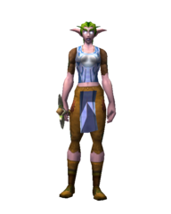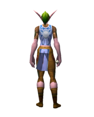</td><td class="note">marked one side's only, but shows its own emblem (a city's, a faction's or a battleground's): check by eye</td></tr>
<tr><td class="num">24344</td><td class="iconcell">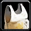</td><td><a class="q-common" href="https://www.wowhead.com/wotlk/item=24344" target="_blank" rel="noopener">Tabard of the Hand</a></td><td><span class="side s2">Alliance</span></td><td class="worn small">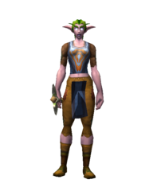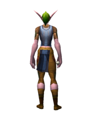</td><td class="note">marked one side's only, but shows its own emblem (a city's, a faction's or a battleground's): check by eye</td></tr>
<tr><td class="num">19032</td><td class="iconcell"></td><td><a class="q-common" href="https://www.wowhead.com/wotlk/item=19032" target="_blank" rel="noopener">Stormpike Battle Tabard</a></td><td><span class="side s2">Alliance</span></td><td class="worn small">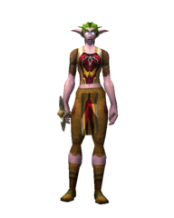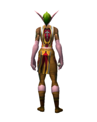</td><td class="note">marked one side's only, but shows its own emblem (a city's, a faction's or a battleground's): check by eye</td></tr>
<tr><td class="num">45579</td><td class="iconcell">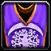</td><td><a class="q-common" href="https://www.wowhead.com/wotlk/item=45579" target="_blank" rel="noopener">Darnassus Tabard</a></td><td><span class="side s2">Alliance</span></td><td class="worn small"></td><td class="note">marked one side's only, but shows its own emblem (a city's, a faction's or a battleground's): check by eye</td></tr>
<tr><td class="num">31774</td><td class="iconcell"></td><td><a class="q-common" href="https://www.wowhead.com/wotlk/item=31774" target="_blank" rel="noopener">Kurenai Tabard</a></td><td><span class="side s2">Alliance</span></td><td class="worn small">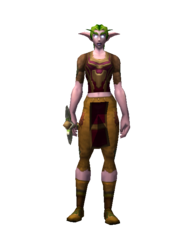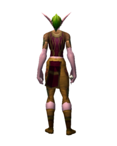</td><td class="note">marked one side's only, but shows its own emblem (a city's, a faction's or a battleground's): check by eye</td></tr>
<tr><td class="num">20132</td><td class="iconcell"></td><td><a class="q-common" href="https://www.wowhead.com/wotlk/item=20132" target="_blank" rel="noopener">Arathor Battle Tabard</a></td><td><span class="side s2">Alliance</span></td><td class="worn small">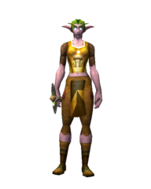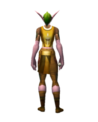</td><td class="note">marked one side's only, but shows its own emblem (a city's, a faction's or a battleground's): check by eye</td></tr>
<tr><td class="num">19505</td><td class="iconcell"></td><td><a class="q-common" href="https://www.wowhead.com/wotlk/item=19505" target="_blank" rel="noopener">Warsong Battle Tabard</a></td><td><span class="side s1">Horde</span></td><td class="worn small">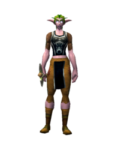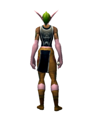</td><td class="note">marked one side's only, but shows its own emblem (a city's, a faction's or a battleground's): check by eye</td></tr>
<tr><td class="num">20131</td><td class="iconcell"></td><td><a class="q-common" href="https://www.wowhead.com/wotlk/item=20131" target="_blank" rel="noopener">Battle Tabard of the Defilers</a></td><td><span class="side s1">Horde</span></td><td class="worn small">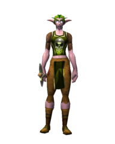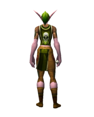</td><td class="note">marked one side's only, but shows its own emblem (a city's, a faction's or a battleground's): check by eye</td></tr>
<tr><td class="num">45582</td><td class="iconcell">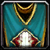</td><td><a class="q-common" href="https://www.wowhead.com/wotlk/item=45582" target="_blank" rel="noopener">Sen'jin Tabard</a></td><td><span class="side s1">Horde</span></td><td class="worn small"></td><td class="note">marked one side's only, but shows its own emblem (a city's, a faction's or a battleground's): check by eye</td></tr>
<tr><td class="num">31773</td><td class="iconcell"></td><td><a class="q-common" href="https://www.wowhead.com/wotlk/item=31773" target="_blank" rel="noopener">Mag'har Tabard</a></td><td><span class="side s1">Horde</span></td><td class="worn small"></td><td class="note">marked one side's only, but shows its own emblem (a city's, a faction's or a battleground's): check by eye</td></tr>
<tr><td class="num">45583</td><td class="iconcell"></td><td><a class="q-common" href="https://www.wowhead.com/wotlk/item=45583" target="_blank" rel="noopener">Undercity Tabard</a></td><td><span class="side s1">Horde</span></td><td class="worn small"></td><td class="note">marked one side's only, but shows its own emblem (a city's, a faction's or a battleground's): check by eye</td></tr>
<tr><td class="num">45585</td><td class="iconcell"></td><td><a class="q-common" href="https://www.wowhead.com/wotlk/item=45585" target="_blank" rel="noopener">Silvermoon City Tabard</a></td><td><span class="side s1">Horde</span></td><td class="worn small"></td><td class="note">marked one side's only, but shows its own emblem (a city's, a faction's or a battleground's): check by eye</td></tr>
<tr><td class="num">45584</td><td class="iconcell"></td><td><a class="q-common" href="https://www.wowhead.com/wotlk/item=45584" target="_blank" rel="noopener">Thunder Bluff Tabard</a></td><td><span class="side s1">Horde</span></td><td class="worn small"></td><td class="note">marked one side's only, but shows its own emblem (a city's, a faction's or a battleground's): check by eye</td></tr>
<tr><td class="num">25549</td><td class="iconcell"></td><td><a class="q-common" href="https://www.wowhead.com/wotlk/item=25549" target="_blank" rel="noopener">Blood Knight Tabard</a></td><td><span class="side s1">Horde</span></td><td class="worn small"></td><td class="note">marked one side's only, but shows its own emblem (a city's, a faction's or a battleground's): check by eye</td></tr>
<tr><td class="num">19031</td><td class="iconcell"></td><td><a class="q-common" href="https://www.wowhead.com/wotlk/item=19031" target="_blank" rel="noopener">Frostwolf Battle Tabard</a></td><td><span class="side s1">Horde</span></td><td class="worn small"></td><td class="note">marked one side's only, but shows its own emblem (a city's, a faction's or a battleground's): check by eye</td></tr>
<tr><td class="num">24004</td><td class="iconcell"></td><td><a class="q-common" href="https://www.wowhead.com/wotlk/item=24004" target="_blank" rel="noopener">Thrallmar Tabard</a></td><td><span class="side s1">Horde</span></td><td class="worn small"></td><td class="note">marked one side's only, but shows its own emblem (a city's, a faction's or a battleground's): check by eye</td></tr>
<tr><td class="num">46818</td><td class="iconcell"></td><td><a class="q-common" href="https://www.wowhead.com/wotlk/item=46818" target="_blank" rel="noopener">Sunreaver Tabard</a></td><td><span class="side s1">Horde</span></td><td class="worn small"></td><td class="note">marked one side's only, but shows its own emblem (a city's, a faction's or a battleground's): check by eye</td></tr>
<tr><td class="num">38309</td><td class="iconcell"></td><td><a class="q-epic" href="https://www.wowhead.com/wotlk/item=38309" target="_blank" rel="noopener">Tabard of Nature</a></td><td><span class="none">neither</span></td><td class="worn small"></td><td class="note">no side marked; no side's crest</td></tr>
<tr><td class="num">35279</td><td class="iconcell"></td><td><a class="q-rare" href="https://www.wowhead.com/wotlk/item=35279" target="_blank" rel="noopener">Tabard of Summer Skies</a></td><td><span class="none">neither</span></td><td class="worn small"></td><td class="note">no side marked; no side's crest</td></tr>
<tr><td class="num">35280</td><td class="iconcell"></td><td><a class="q-rare" href="https://www.wowhead.com/wotlk/item=35280" target="_blank" rel="noopener">Tabard of Summer Flames</a></td><td><span class="none">neither</span></td><td class="worn small"></td><td class="note">no side marked; no side's crest</td></tr>
<tr><td class="num">40643</td><td class="iconcell"></td><td><a class="q-epic" href="https://www.wowhead.com/wotlk/item=40643" target="_blank" rel="noopener">Tabard of the Achiever</a></td><td><span class="none">neither</span></td><td class="worn small"></td><td class="note">no side marked; no side's crest</td></tr>
<tr><td class="num">38310</td><td class="iconcell"></td><td><a class="q-epic" href="https://www.wowhead.com/wotlk/item=38310" target="_blank" rel="noopener">Tabard of the Arcane</a></td><td><span class="none">neither</span></td><td class="worn small"></td><td class="note">no side marked; no side's crest</td></tr>
<tr><td class="num">35221</td><td class="iconcell"></td><td><a class="q-common" href="https://www.wowhead.com/wotlk/item=35221" target="_blank" rel="noopener">Tabard of the Shattered Sun</a></td><td><span class="none">neither</span></td><td class="worn small"></td><td class="note">no side marked; no side's crest</td></tr>
<tr><td class="num">38314</td><td class="iconcell"></td><td><a class="q-epic" href="https://www.wowhead.com/wotlk/item=38314" target="_blank" rel="noopener">Tabard of the Defender</a></td><td><span class="none">neither</span></td><td class="worn small"></td><td class="note">no side marked; no side's crest</td></tr>
<tr><td class="num">22999</td><td class="iconcell"></td><td><a class="q-common" href="https://www.wowhead.com/wotlk/item=22999" target="_blank" rel="noopener">Tabard of the Argent Dawn</a></td><td><span class="none">neither</span></td><td class="worn small"></td><td class="note">no side marked; no side's crest</td></tr>
<tr><td class="num">28788</td><td class="iconcell"></td><td><a class="q-common" href="https://www.wowhead.com/wotlk/item=28788" target="_blank" rel="noopener">Tabard of the Protector</a></td><td><span class="none">neither</span></td><td class="worn small"></td><td class="note">no side marked; no side's crest</td></tr>
<tr><td class="num">52252</td><td class="iconcell"></td><td><a class="q-epic" href="https://www.wowhead.com/wotlk/item=52252" target="_blank" rel="noopener">Tabard of the Lightbringer</a></td><td><span class="none">neither</span></td><td class="worn small"></td><td class="note">no side marked; no side's crest</td></tr>
<tr><td class="num">23192</td><td class="iconcell"></td><td><a class="q-uncommon" href="https://www.wowhead.com/wotlk/item=23192" target="_blank" rel="noopener">Tabard of the Scarlet Crusade</a></td><td><span class="none">neither</span></td><td class="worn small"></td><td class="note">no side marked; no side's crest</td></tr>
<tr><td class="num">43156</td><td class="iconcell"></td><td><a class="q-common" href="https://www.wowhead.com/wotlk/item=43156" target="_blank" rel="noopener">Tabard of the Wyrmrest Accord</a></td><td><span class="none">neither</span></td><td class="worn small"></td><td class="note">no side marked; no side's crest</td></tr>
<tr><td class="num">43154</td><td class="iconcell"></td><td><a class="q-common" href="https://www.wowhead.com/wotlk/item=43154" target="_blank" rel="noopener">Tabard of the Argent Crusade</a></td><td><span class="none">neither</span></td><td class="worn small"></td><td class="note">no side marked; no side's crest</td></tr>
<tr><td class="num">43157</td><td class="iconcell"></td><td><a class="q-common" href="https://www.wowhead.com/wotlk/item=43157" target="_blank" rel="noopener">Tabard of the Kirin Tor</a></td><td><span class="none">neither</span></td><td class="worn small"></td><td class="note">no side marked; no side's crest</td></tr>
<tr><td class="num">43348</td><td class="iconcell"></td><td><a class="q-epic" href="https://www.wowhead.com/wotlk/item=43348" target="_blank" rel="noopener">Tabard of the Explorer</a></td><td><span class="none">neither</span></td><td class="worn small"></td><td class="note">no side marked; no side's crest</td></tr>
<tr><td class="num">38313</td><td class="iconcell"></td><td><a class="q-epic" href="https://www.wowhead.com/wotlk/item=38313" target="_blank" rel="noopener">Tabard of Fury</a></td><td><span class="none">neither</span></td><td class="worn small"></td><td class="note">no side marked; no side's crest</td></tr>
<tr><td class="num">38311</td><td class="iconcell"></td><td><a class="q-epic" href="https://www.wowhead.com/wotlk/item=38311" target="_blank" rel="noopener">Tabard of the Void</a></td><td><span class="none">neither</span></td><td class="worn small"></td><td class="note">no side marked; no side's crest</td></tr>
<tr><td class="num">43155</td><td class="iconcell"></td><td><a class="q-common" href="https://www.wowhead.com/wotlk/item=43155" target="_blank" rel="noopener">Tabard of the Ebon Blade</a></td><td><span class="none">neither</span></td><td class="worn small"></td><td class="note">no side marked; no side's crest</td></tr>
<tr><td class="num">23709</td><td class="iconcell"></td><td><a class="q-epic" href="https://www.wowhead.com/wotlk/item=23709" target="_blank" rel="noopener">Tabard of Frost</a></td><td><span class="none">neither</span></td><td class="worn small"></td><td class="note">no side marked; no side's crest</td></tr>
<tr><td class="num">31779</td><td class="iconcell"></td><td><a class="q-common" href="https://www.wowhead.com/wotlk/item=31779" target="_blank" rel="noopener">Aldor Tabard</a></td><td><span class="none">neither</span></td><td class="worn small"></td><td class="note">no side marked; no side's crest</td></tr>
<tr><td class="num">43349</td><td class="iconcell"></td><td><a class="q-epic" href="https://www.wowhead.com/wotlk/item=43349" target="_blank" rel="noopener">Tabard of Brute Force</a></td><td><span class="none">neither</span></td><td class="worn small"></td><td class="note">no side marked; no side's crest</td></tr>
<tr><td class="num">31279</td><td class="iconcell"></td><td><a class="q-common" href="https://www.wowhead.com/wotlk/item=31279" target="_blank" rel="noopener">Enchanted Illidari Tabard</a></td><td><span class="none">neither</span></td><td class="worn small"></td><td class="note">no side marked; no side's crest</td></tr>
<tr><td class="num">45983</td><td class="iconcell"></td><td><a class="q-epic" href="https://www.wowhead.com/wotlk/item=45983" target="_blank" rel="noopener">Furious Gladiator's Tabard</a></td><td><span class="none">neither</span></td><td class="worn small"></td><td class="note">no side marked; no side's crest</td></tr>
<tr><td class="num">31404</td><td class="iconcell"></td><td><a class="q-uncommon" href="https://www.wowhead.com/wotlk/item=31404" target="_blank" rel="noopener">Green Trophy Tabard of the Illidari</a></td><td><span class="none">neither</span></td><td class="worn small"></td><td class="note">no side marked; no side's crest</td></tr>
<tr><td class="num">5976</td><td class="iconcell"></td><td><a class="q-common" href="https://www.wowhead.com/wotlk/item=5976" target="_blank" rel="noopener">Guild Tabard</a></td><td><span class="none">neither</span></td><td class="worn small"></td><td class="note">no side marked; no side's crest</td></tr>
<tr><td class="num">19160</td><td class="iconcell"></td><td><a class="q-common" href="https://www.wowhead.com/wotlk/item=19160" target="_blank" rel="noopener">Contest Winner's Tabard</a></td><td><span class="none">neither</span></td><td class="worn small"></td><td class="note">no side marked; no side's crest</td></tr>
<tr><td class="num">36941</td><td class="iconcell"></td><td><a class="q-rare" href="https://www.wowhead.com/wotlk/item=36941" target="_blank" rel="noopener">Competitor's Tabard</a></td><td><span class="none">neither</span></td><td class="worn small"></td><td class="note">no side marked; no side's crest</td></tr>
<tr><td class="num">31776</td><td class="iconcell"></td><td><a class="q-common" href="https://www.wowhead.com/wotlk/item=31776" target="_blank" rel="noopener">Consortium Tabard</a></td><td><span class="none">neither</span></td><td class="worn small"></td><td class="note">no side marked; no side's crest</td></tr>
<tr><td class="num">46874</td><td class="iconcell"></td><td><a class="q-rare" href="https://www.wowhead.com/wotlk/item=46874" target="_blank" rel="noopener">Argent Crusader's Tabard</a></td><td><span class="none">neither</span></td><td class="worn small"></td><td class="note">no side marked; no side's crest</td></tr>
<tr><td class="num">31804</td><td class="iconcell"></td><td><a class="q-common" href="https://www.wowhead.com/wotlk/item=31804" target="_blank" rel="noopener">Cenarion Expedition Tabard</a></td><td><span class="none">neither</span></td><td class="worn small"></td><td class="note">no side marked; no side's crest</td></tr>
<tr><td class="num">23705</td><td class="iconcell"></td><td><a class="q-epic" href="https://www.wowhead.com/wotlk/item=23705" target="_blank" rel="noopener">Tabard of Flame</a></td><td><span class="none">neither</span></td><td class="worn small"></td><td class="note">no side marked; no side's crest</td></tr>
<tr><td class="num">31777</td><td class="iconcell"></td><td><a class="q-common" href="https://www.wowhead.com/wotlk/item=31777" target="_blank" rel="noopener">Keepers of Time Tabard</a></td><td><span class="none">neither</span></td><td class="worn small"></td><td class="note">no side marked; no side's crest</td></tr>
<tr><td class="num">31778</td><td class="iconcell"></td><td><a class="q-common" href="https://www.wowhead.com/wotlk/item=31778" target="_blank" rel="noopener">Lower City Tabard</a></td><td><span class="none">neither</span></td><td class="worn small"></td><td class="note">no side marked; no side's crest</td></tr>
<tr><td class="num">32445</td><td class="iconcell"></td><td><a class="q-common" href="https://www.wowhead.com/wotlk/item=32445" target="_blank" rel="noopener">Skyguard Tabard</a></td><td><span class="none">neither</span></td><td class="worn small"></td><td class="note">no side marked; no side's crest</td></tr>
<tr><td class="num">31775</td><td class="iconcell"></td><td><a class="q-common" href="https://www.wowhead.com/wotlk/item=31775" target="_blank" rel="noopener">Sporeggar Tabard</a></td><td><span class="none">neither</span></td><td class="worn small"></td><td class="note">no side marked; no side's crest</td></tr>
<tr><td class="num">38312</td><td class="iconcell"></td><td><a class="q-epic" href="https://www.wowhead.com/wotlk/item=38312" target="_blank" rel="noopener">Tabard of Brilliance</a></td><td><span class="none">neither</span></td><td class="worn small"></td><td class="note">no side marked; no side's crest</td></tr>
<tr><td class="num">43300</td><td class="iconcell"></td><td><a class="q-epic" href="https://www.wowhead.com/wotlk/item=43300" target="_blank" rel="noopener">Loremaster's Colors</a></td><td><span class="none">neither</span></td><td class="worn small"></td><td class="note">no side marked; no side's crest</td></tr>
<tr><td class="num">31781</td><td class="iconcell"></td><td><a class="q-common" href="https://www.wowhead.com/wotlk/item=31781" target="_blank" rel="noopener">Sha'tar Tabard</a></td><td><span class="none">neither</span></td><td class="worn small"></td><td class="note">no side marked; no side's crest</td></tr>
<tr><td class="num">49086</td><td class="iconcell"></td><td><a class="q-epic" href="https://www.wowhead.com/wotlk/item=49086" target="_blank" rel="noopener">Relentless Gladiator's Tabard</a></td><td><span class="none">neither</span></td><td class="worn small"></td><td class="note">no side marked; no side's crest</td></tr>
<tr><td class="num">31780</td><td class="iconcell"></td><td><a class="q-common" href="https://www.wowhead.com/wotlk/item=31780" target="_blank" rel="noopener">Scryers Tabard</a></td><td><span class="none">neither</span></td><td class="worn small"></td><td class="note">no side marked; no side's crest</td></tr>
<tr><td class="num">32828</td><td class="iconcell"></td><td><a class="q-common" href="https://www.wowhead.com/wotlk/item=32828" target="_blank" rel="noopener">Ogri'la Tabard</a></td><td><span class="none">neither</span></td><td class="worn small"></td><td class="note">no side marked; no side's crest</td></tr>
<tr><td class="num">31405</td><td class="iconcell"></td><td><a class="q-uncommon" href="https://www.wowhead.com/wotlk/item=31405" target="_blank" rel="noopener">Purple Trophy Tabard of the Illidari</a></td><td><span class="none">neither</span></td><td class="worn small"></td><td class="note">no side marked; no side's crest</td></tr>
<tr><td class="num">51534</td><td class="iconcell"></td><td><a class="q-epic" href="https://www.wowhead.com/wotlk/item=51534" target="_blank" rel="noopener">Wrathful Gladiator's Tabard</a></td><td><span class="none">neither</span></td><td class="worn small"></td><td class="note">no side marked; no side's crest</td></tr>
</tbody></table></div>  </section>
</main>
